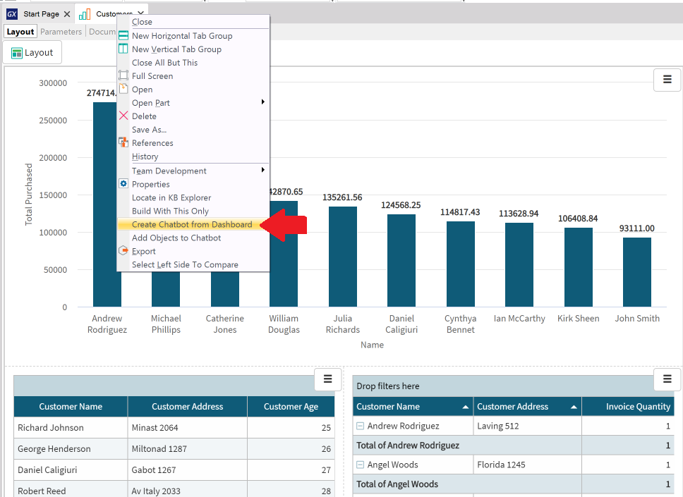
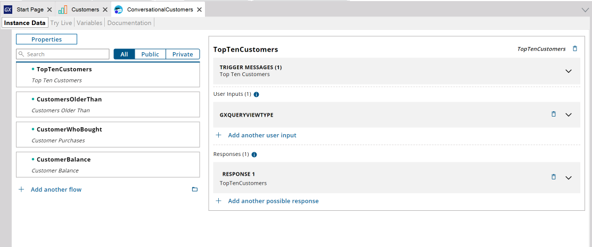

Using a Dashboard object is a quick option to create a chatbot based on a series of queries. To do this, simply right-click on the Dashboard object you want to use to initialize the chatbot and select the option "Create Chatbot from Dashboard":  This action will create a new chatbot initialized with all the queries on the Dashboard.  See AlsoHowTo: Integrate queries in a chatbot AvailabilityThis feature is available since GeneXus 17.
|
| Backlinks |
| Multi-experience with GeneXus 17 |